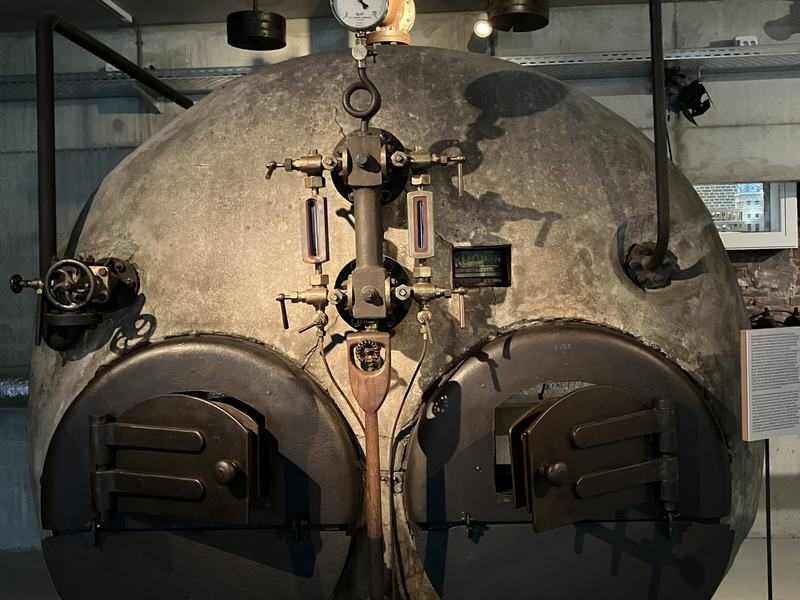
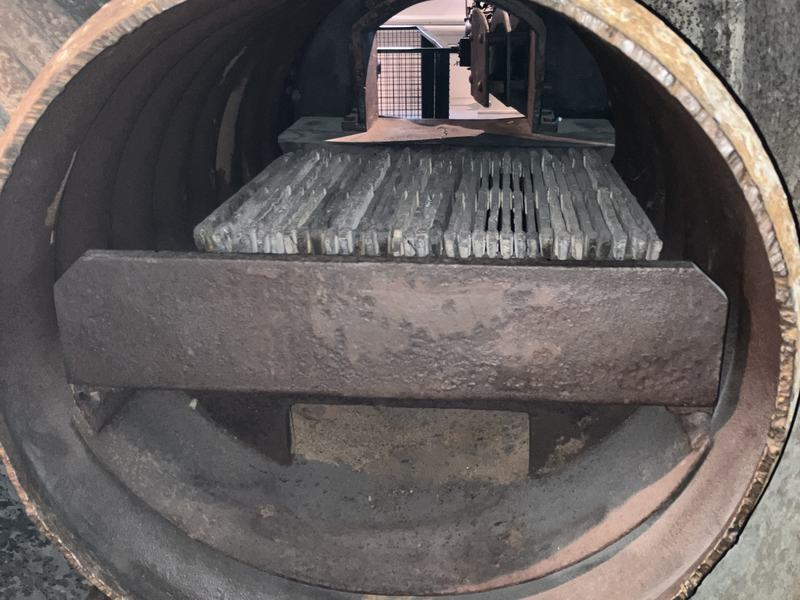
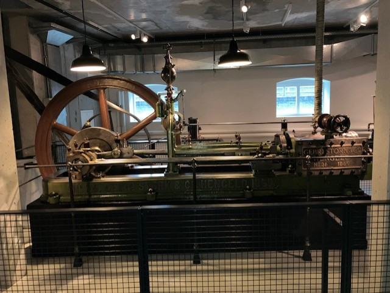
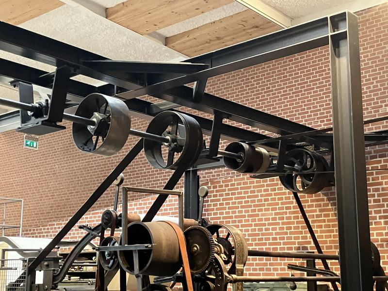
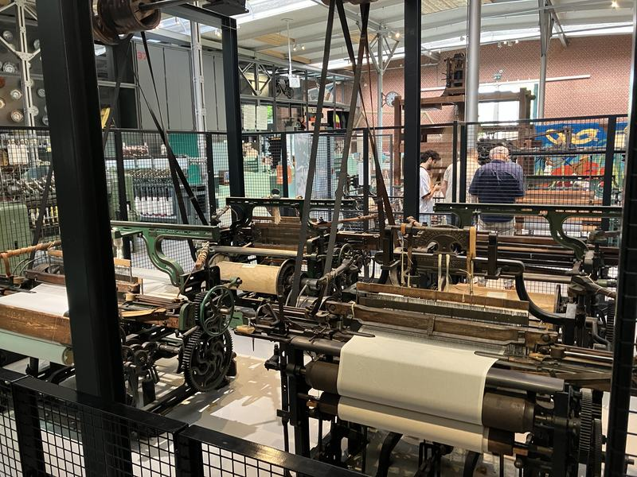

12. Stoomkelder





Ga naar Plattegrond Hal 3
Welkom in het ketelhuis, het kloppende hart van de fabriek. Hier zie je een grote stoomketel uit 1908. In deze ketel werd water met kolen verhit. Het water veranderde in stoom onder hoge druk. De stoker hield de druk in de gaten met een manometer. De druk mocht niet boven de rode streep komen.
Boven op de ketel zit een overdruktoestel. Dat werkte met gewichten van acht kilo. Werd de druk te hoog, dan liet het ventiel automatisch stoom ontsnappen. Dat maakte veel lawaai. De stoker moest dan ingrijpen.
De ketel moest regelmatig worden schoongemaakt. Door het verhitte water ontstond ketelsteen. Die harde laag zette zich aan de binnenkant van de ketel vast. Een arbeider moest de ketel daarom vanbinnen schoonbikken. Dat was zwaar en vies werk. De ketel was vaak nog warm en het mangat was erg krap. Door dit kleine gat kroop de arbeider naar binnen.
De stoom ging door leidingen naar de stoommachine uit 1869, die hiernaast staat. Deze machine is gebouwd door Stork uit Hengelo. De stoommachine zette de kracht van de stoom om in een draaiende beweging. De machine leverde ongeveer 80 pk.
Via een grote as en leren drijfriemen werd de kracht door de fabriek verspreid. Zo konden veel textielmachines tegelijk werken. Dankzij stoomkracht konden fabrieken veel meer textiel maken dan thuiswerkers met handgereedschap.
Ga nu het trapje weer op, naar het volgende luisterpunt: vier weefmachines en klik op het pijltje naar rechts.